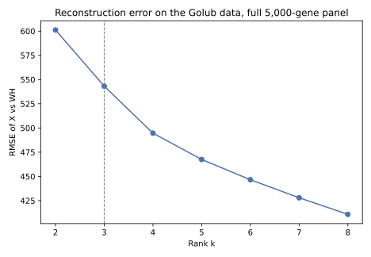
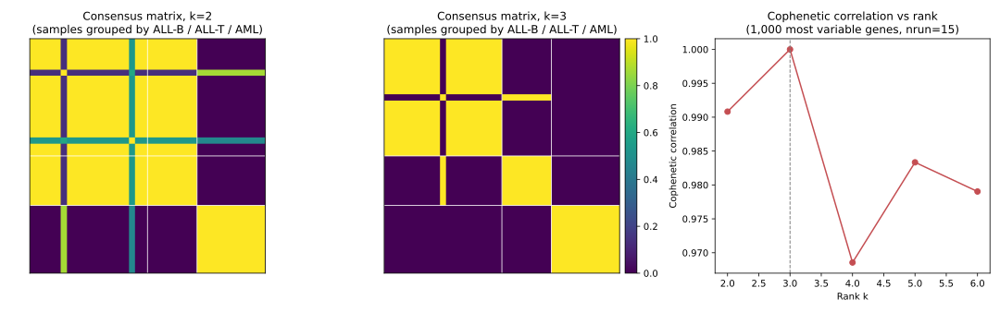
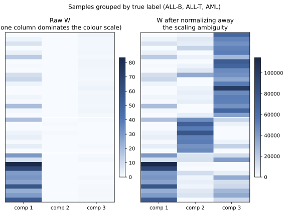
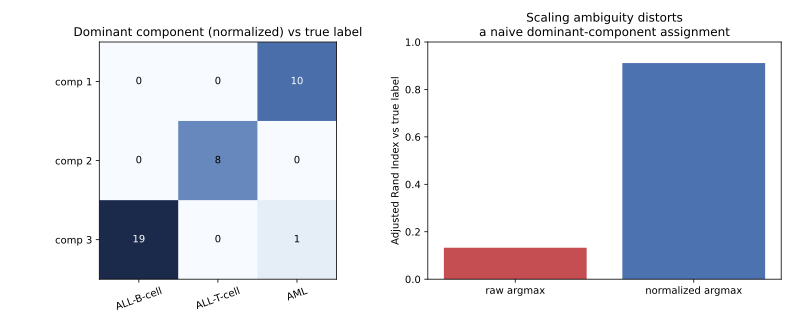
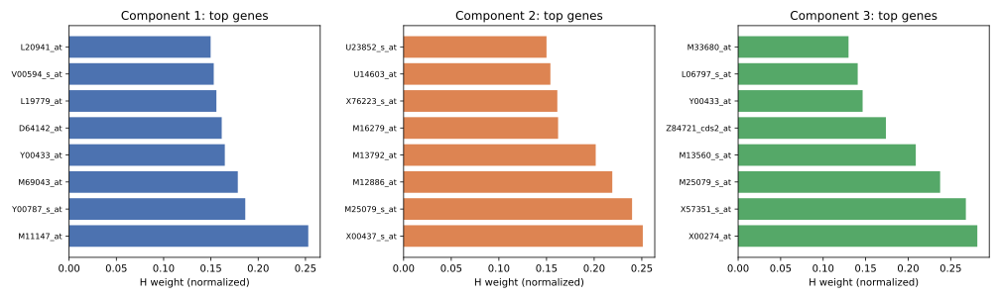
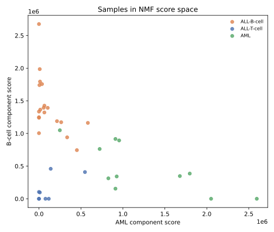
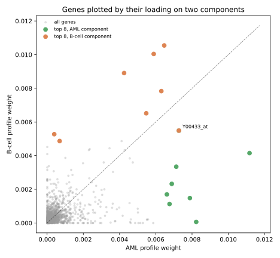

4 NMF on leukemia gene expression data
4.1 The dataset
These exercises use the acute leukemia gene expression dataset originally published by Golub et al. (1999) and later used by Brunet, Tamayo, Golub, and Mesirov (2004) to introduce NMF-based molecular pattern discovery in cancer genomics. The version used here, esGolub, is bundled with the R NMF package and is exactly the dataset behind the original Brunet et al. NMF analysis: 38 bone marrow samples, 5,000 genes (already reduced from the original platform’s larger probe set), with expression values floored at 20.
Every sample carries a diagnosis, acute lymphoblastic leukemia (ALL) or acute myeloid leukemia (AML), and the ALL samples are further split into B-cell and T-cell subtypes.
ALL AML
27 11
B-cell T-cell
ALL 19 8
AML 0 0These labels are used only to check the result afterward. NMF never receives them during fitting.
Golub, T.R. et al. (1999). Molecular classification of cancer: class discovery and class prediction by gene expression monitoring. Science, 286(5439), 531-537.
Brunet, J.P., Tamayo, P., Golub, T.R., and Mesirov, J.P. (2004). Metagenes and molecular pattern discovery using matrix factorization. PNAS, 101(12), 4164-4169.
The exported CSV files used below (golub_expression.csv, golub_metadata.csv, golub_features.csv) were produced once from NMF::esGolub by scripts/generate_golub_data.R, with samples placed in rows to match this course’s convention, so both languages read exactly the same numbers. golub_gene_symbols.csv, used in Exercise 5 to identify what the highest-weighted genes actually are, was produced once by scripts/annotate_golub_genes.R from Bioconductor’s hu6800.db annotation package, which maps this dataset’s original Affymetrix HU6800 probe IDs to gene symbols.
Place the downloaded CSV files inside a folder named data.
4.2 Exercise 1. Load, orient, and sanity-check the data
Task. Load the expression matrix and metadata. Confirm which axis holds samples and which holds genes. Confirm the data is non-negative and free of missing values. Report the dimensions and the class counts above.
Do not assume the orientation from the file name. Check dim()/.shape and compare it against what you already know: 38 samples, 5,000 genes.
expr <- read.csv("data/golub_expression.csv", row.names = 1)
meta <- read.csv("data/golub_metadata.csv")
X <- as.matrix(expr)
dim(X)
range(X)
any(X < 0)
any(is.na(X))
table(meta$ALL_AML)[1] 38 5000
[1] 20 61225
[1] FALSE
[1] FALSE
ALL AML
27 11import pandas as pd
expr = pd.read_csv("data/golub_expression.csv", index_col=0)
meta = pd.read_csv("data/golub_metadata.csv")
X = expr.to_numpy()
print(X.shape)
print(X.min(), X.max())
print((X < 0).any())
print(pd.isna(X).any())
print(meta["ALL_AML"].value_counts())(38, 5000)
20 61225
False
False
ALL_AML
ALL 27
AML 11
Name: count, dtype: int64The matrix is 38 rows by 5,000 columns: samples in rows, genes in columns, this course’s convention, confirmed by matching the row count against the known sample count rather than trusting the column headers. Every value lies between 20 and 61,225, with 20 being a floor built into this version of the dataset by its original preprocessing (Brunet et al. thresholded very low or unreliable readings at this value rather than allowing them to approach zero or go negative). There are no missing values. A missing measurement is not the same thing as a zero measurement, and this dataset happens to have neither.
4.3 Exercise 2. Does more components always reconstruct better?
Task. Fit NMF at k = 2, ..., 8 on the full 5,000-gene matrix and plot reconstruction RMSE against k. Does the error ever increase? Does the rank with the lowest error in this sweep have to be the best choice?
library(NNLM)
ks <- 2:8
err_by_k <- sapply(ks, function(k) {
f <- nnmf(X, k = k, method = "scd", loss = "mse", max.iter = 500)
sqrt(mean((X - f$W %*% f$H)^2))
})
names(err_by_k) <- ks
round(err_by_k, 1) 2 3 4 5 6 7 8
601.1 543.2 494.6 466.8 448.9 425.9 409.0import numpy as np
from sklearn.decomposition import NMF
errors = {}
for k in range(2, 9):
m = NMF(n_components=k, init="nndsvda", solver="cd", beta_loss="frobenius",
max_iter=1000, tol=1e-4, random_state=0)
Wk = m.fit_transform(X)
errors[k] = np.sqrt(np.mean((X - m.inverse_transform(Wk)) ** 2))
errors{2: 601.2, 3: 543.2, 4: 494.7, 5: 467.5, 6: 446.6, 7: 428.0, 8: 410.8}
The error decreases at every step in Figure 4.1 and never increases, for the same reason established in Chapter 3: a rank-8 factorization always has at least as much flexibility as a rank-2 one. Unlike the earlier simulation, there is no sharp elbow here at all, only a smooth, gradual decline. Read alone, this curve gives almost no guidance on which k to prefer. Reconstruction error answers “how flexible is this model,” not “how many biologically meaningful patterns does this dataset contain,” and those are different questions. The rank sweep here must be read together with the stability and consensus diagnostics in the next exercise, not on its own.
4.4 Exercise 3. Rank survey with the NMF package
Task. The 5,000-gene matrix makes many repeated NMF fits slow. Reduce to the 1,000 most variable genes, chosen without looking at the ALL/AML labels, and use the NMF package’s rank survey (nrun = 15, the classic Brunet algorithm) to compute a consensus matrix and cophenetic correlation for k = 2, ..., 6. Which rank looks most defensible, and why?
The 1,000 genes are chosen by variance across all 38 samples, computed before any use of the ALL/AML or cell-type labels. Filtering by, say, a t-test against the known classes would leak label information into a supposedly unsupervised analysis and would make any later agreement with those same labels circular.
Remember the orientation trap from Chapter 2’s practice: NMF::nmf()’s consensus() clusters the columns of whatever matrix was passed to it. Passing genes-in-rows, samples-in-columns is what makes the consensus matrix a sample-by-sample matrix.
library(NMF)
gene_var <- apply(X, 2, var)
top_genes <- order(gene_var, decreasing = TRUE)[1:1000]
X_filtered <- X[, top_genes]
survey <- nmf(t(X_filtered), rank = 2:6, nrun = 15, method = "brunet", seed = 123)
coph <- sapply(survey$fit, cophcor)
names(coph) <- 2:6
round(coph, 4) 2 3 4 5 6
0.9908 1.0000 0.9686 0.9833 0.9790scikit-learn has no built-in consensus-survey function, but the same idea, repeated fits, a consensus matrix, a cophenetic correlation from hierarchical clustering, is a direct port using scipy.
import numpy as np
from sklearn.decomposition import NMF
from scipy.cluster.hierarchy import linkage, cophenet
from scipy.spatial.distance import squareform
gene_var = X.var(axis=0)
top_genes = np.argsort(gene_var)[::-1][:1000]
X_filtered = X[:, top_genes]
n = X_filtered.shape[0]
def cophenetic_correlation(X, k, n_runs=15, seed0=123):
same_component = np.zeros((n, n))
for i in range(n_runs):
m = NMF(n_components=k, init="random", solver="mu", beta_loss="kullback-leibler",
max_iter=200, random_state=seed0 + i)
labels = m.fit_transform(X).argmax(axis=1)
same_component += (labels[:, None] == labels[None, :])
consensus = same_component / n_runs
condensed = squareform(1 - consensus, checks=False)
linkage_matrix = linkage(condensed, method="average")
coph_corr, _ = cophenet(linkage_matrix, condensed)
return coph_corr
{k: round(cophenetic_correlation(X_filtered, k), 4) for k in range(2, 7)}{2: 0.9923, 3: 0.9965, 4: 0.9553, 5: 0.9411, 6: 0.9542}
k = 3 reaches a cophenetic correlation of exactly 1.0000 in R’s built-in survey, the unique peak across the ranks tried, and its consensus matrix in Figure 4.2 shows three clean, sharply bounded blocks with almost no cross-block mixing. The Python port, a different algorithm (KL-based multiplicative updates, hard argmax co-clustering, average-linkage cophenetic correlation, rather than R’s own consensus machinery), agrees on the qualitative answer, k = 3 scores highest, without matching R’s numbers exactly.
4.4.1 Reading a consensus matrix
A consensus matrix entry \((i, j)\) is the fraction of the 15 fits in which samples \(i\) and \(j\) ended up in the same component, so every entry runs from 0 (never together) to 1 (always together). A rank that describes the data well produces a block-diagonal pattern once samples are grouped by identity: bright, near-1 blocks on the diagonal, dark, near-0 values everywhere off it. A rank that fits poorly blurs that pattern instead, with intermediate values connecting groups a better rank would keep apart. Cophenetic correlation is a single number that summarizes how block-like the matrix is. Looking at the matrix itself shows exactly which samples, if any, are the source of any blur.
Averaging the consensus matrix within and between the three true groups (used here only to explain the diagnostic, not to choose k) makes this concrete for k=2 and k=3.
groups <- c("ALL-B-cell", "ALL-T-cell", "AML")
block_means <- function(cs) {
m <- matrix(0, 3, 3, dimnames = list(groups, groups))
for (g1 in groups) for (g2 in groups) m[g1, g2] <- mean(cs[combo == g1, combo == g2])
m
}
cs2 <- as.matrix(read.csv("data/golub_consensus_k2.csv"))
cs3 <- as.matrix(read.csv("data/golub_consensus_k3.csv"))
round(block_means(cs2), 3)
round(block_means(cs3), 3)k = 2:
ALL-B-cell ALL-T-cell AML
ALL-B-cell 0.872 0.93 0.07
ALL-T-cell 0.930 1.00 0.00
AML 0.070 0.00 1.00
k = 3:
ALL-B-cell ALL-T-cell AML
ALL-B-cell 0.900 0.053 0
ALL-T-cell 0.053 1.000 0
AML 0.000 0.000 1groups = ["ALL-B-cell", "ALL-T-cell", "AML"]
def block_means(cs):
m = pd.DataFrame(index=groups, columns=groups, dtype=float)
for g1 in groups:
for g2 in groups:
m.loc[g1, g2] = cs[np.ix_(combo == g1, combo == g2)].mean()
return m
cs2 = pd.read_csv("data/golub_consensus_k2.csv").to_numpy()
cs3 = pd.read_csv("data/golub_consensus_k3.csv").to_numpy()
print(block_means(cs2).round(3))
print(block_means(cs3).round(3))k = 2:
ALL-B-cell ALL-T-cell AML
ALL-B-cell 0.872 0.93 0.07
ALL-T-cell 0.930 1.00 0.00
AML 0.070 0.00 1.00
k = 3:
ALL-B-cell ALL-T-cell AML
ALL-B-cell 0.900 0.053 0.0
ALL-T-cell 0.053 1.000 0.0
AML 0.000 0.000 1.0At k = 2, B-cell and T-cell ALL samples land in the same component in 93% of runs on average. With only two components available, the survey has nowhere to put an ALL/AML split except by merging both ALL subtypes together, and it does so consistently, which is exactly why this still counts as a stable, high-cophenetic partition even though it is biologically coarser than k = 3. At k = 3, that same B-cell/T-cell cross-consensus falls to 5%: the extra component gives the two subtypes somewhere separate to go, and every run agrees on where. This is what the jump in cophenetic correlation from 0.9908 to 1.0000 actually reflects, not a marginally better number, but a qualitative change in which sample groupings are stable across restarts.
Even at k = 3 the picture is not perfectly clean: B-cell samples land together with each other in only 90% of runs, not 100%, so a handful of B-cell samples are occasionally pulled into a different component depending on the random start. This is the kind of detail a single cophenetic number cannot show but the matrix can: which group, if any, is less than fully resolved, and by how much.
4.5 Exercise 4. Fit rank 3 and inspect the sample scores
Task. Fit NMF at k = 3 on the full 5,000-gene matrix in both R and Python. For each sample, find its dominant component (the column of W with the largest value). Cross-tabulate against the true ALL-B-cell / ALL-T-cell / AML label. Then check whether this “dominant component” assignment is trustworthy by examining the scale of each column of W before concluding anything.
Chapter 3 showed that WD and D^{-1}H reconstruct the data identically for any positive diagonal D. That means the raw magnitude of one column of W relative to another carries no information by itself. Look at apply(W, 2, max) (R) or W.max(axis=0) (Python) before trusting an argmax.
set.seed(1)
fit3 <- nnmf(X, k = 3, method = "scd", loss = "mse", max.iter = 2000, rel.tol = 1e-8)
apply(fit3$W, 2, max)
dominant3 <- apply(fit3$W, 1, which.max)
combo <- ifelse(meta$ALL_AML == "AML", "AML", paste0("ALL-", meta$cell_type))
table(dominant3, combo)[1] 78002.73 68476.09 86878.30
combo
dominant3 ALL-B-cell ALL-T-cell AML
1 1 8 0
2 18 0 1
3 0 0 10from sklearn.decomposition import NMF
m3 = NMF(n_components=3, init="nndsvda", solver="cd", beta_loss="frobenius",
max_iter=2000, tol=1e-6, random_state=0)
W3 = m3.fit_transform(X)
H3 = m3.components_
print(W3.max(axis=0))
dominant_raw = W3.argmax(axis=1)
combo = ("ALL-" + meta["cell_type"].astype(str)).where(meta["ALL_AML"] != "AML", "AML")
import pandas as pd
print(pd.crosstab(dominant_raw, combo))[83.47148671 0.47316324 2.58487588]
col_0 ALL-B-cell ALL-T-cell AML
row_0
0 9 5 11
1 0 3 0
2 10 0 0R’s fit happened to land on three columns of W with roughly comparable maxima (about 78,000, 68,000, and 87,000), so its raw argmax gives a fairly clean three-way split. Python’s fit, from a different initialization, landed on three columns with wildly different maxima (about 83, 0.5, and 2.6, a roughly 170-fold spread). Its raw argmax is dominated by whichever column happens to carry the larger share of the arbitrary scaling factor, not by which component is genuinely strongest for each sample: one column absorbs 25 of the 38 samples as “dominant.”
Neither fit is wrong. Both reconstruct X about equally well, and matching their H matrices by correlation (as in Chapter 2) confirms they learned essentially the same three components. The difference is purely the WD/D^{-1}H scaling ambiguity from Chapter 3, and it distorts a naive argmax far more severely on one of the two fits than the other, even though neither fit’s raw column scale was chosen on purpose.
Normalizing each component to a common scale before taking the argmax (giving every row of H unit norm and moving the removed scale into the matching column of W) removes the artifact in both languages, R included:
normalize_wh <- function(W, H) {
row_norm <- sqrt(rowSums(H^2))
list(W = sweep(W, 2, row_norm, "*"), H = H / row_norm)
}
ari <- function(a, b) {
tab <- table(a, b)
n <- sum(tab)
sc <- function(v) sum(choose(v, 2))
index <- sc(tab)
expected <- sc(rowSums(tab)) * sc(colSums(tab)) / choose(n, 2)
maximum <- (sc(rowSums(tab)) + sc(colSums(tab))) / 2
(index - expected) / (maximum - expected)
}
normalized <- normalize_wh(fit3$W, fit3$H)
W3n <- normalized$W
H3n <- normalized$H
dominant_norm <- apply(W3n, 1, which.max)
table(dominant_norm, combo)
cat("ARI, raw argmax: ", round(ari(dominant3, combo), 4), "\n")
cat("ARI, normalized argmax:", round(ari(dominant_norm, combo), 4), "\n") combo
dominant_norm ALL-B-cell ALL-T-cell AML
1 0 8 0
2 19 0 1
3 0 0 10
ARI, raw argmax: 0.8333
ARI, normalized argmax: 0.9113from nmf_helpers import normalize_wh
from sklearn.metrics import adjusted_rand_score
W3n, H3n = normalize_wh(W3, H3)
dominant_norm = W3n.argmax(axis=1)
print(pd.crosstab(dominant_norm, combo))
print("ARI, raw argmax: ", round(adjusted_rand_score(combo, dominant_raw), 4))
print("ARI, normalized argmax:", round(adjusted_rand_score(combo, dominant_norm), 4))col_0 ALL-B-cell ALL-T-cell AML
row_0
0 0 0 10
1 0 8 0
2 19 0 1
ARI, raw argmax: 0.1327
ARI, normalized argmax: 0.9113

Figure 4.4 makes the size of the effect hard to miss for Python: the raw argmax’s ARI of 0.13 is barely better than a random partition, while the normalized argmax’s ARI of 0.91 is a strong, near-complete recovery of the three true subtypes, from what is fundamentally the same fitted model. R’s raw argmax was never this badly corrupted (ARI 0.83, one B-cell and one AML sample landing on the wrong component), because its column scales happened to be closer together to begin with, but normalizing still improves it, and both languages land on the identical ARI of 0.9113 once normalized. Figure 4.3 shows why, for Python’s case: the raw heatmap’s left panel is dominated by a single bright column regardless of sample identity, while the normalized right panel shows three columns each lighting up for a different, correct block of samples. argmax(W) is a convenient summary. It is not safe to use without first checking, or removing, the scaling ambiguity, in either language.
4.6 Exercise 5. What defines each component
Task. Using the normalized H from the previous exercise, list the top 8 genes for each of the three components.
for (r in 1:3) {
top <- sort(H3n[r, ], decreasing = TRUE)[1:8]
cat("Component", r, ":\n")
print(round(top, 3))
}Component 1 :
X00437_s_at M25079_s_at M12886_at M13792_at M16279_at X76223_s_at
0.251 0.240 0.219 0.202 0.162 0.161
U14603_at U23852_s_at
0.154 0.150
Component 2 :
X00274_at X57351_s_at M25079_s_at M13560_s_at Z84721_cds2_at
0.281 0.268 0.237 0.209 0.174
Y00433_at L06797_s_at M33680_at
0.146 0.141 0.130
Component 3 :
M11147_at Y00787_s_at M69043_at Y00433_at D64142_at L19779_at
0.253 0.186 0.178 0.165 0.161 0.156
V00594_s_at L20941_at
0.153 0.150for r in range(3):
top = pd.Series(H3n[r], index=expr.columns).sort_values(ascending=False).head(8)
print(f"Component {r+1}:")
print(top.round(1))Component 1:
M11147_at 0.3
Y00787_s_at 0.2
M69043_at 0.2
Y00433_at 0.2
D64142_at 0.2
L19779_at 0.2
V00594_s_at 0.2
L20941_at 0.1
dtype: float64
Component 2:
X00437_s_at 0.3
M25079_s_at 0.2
M12886_at 0.2
M13792_at 0.2
M16279_at 0.2
X76223_s_at 0.2
U14603_at 0.2
U23852_s_at 0.1
dtype: float64
Component 3:
X00274_at 0.3
X57351_s_at 0.3
M25079_s_at 0.2
M13560_s_at 0.2
Z84721_cds2_at 0.2
Y00433_at 0.1
L06797_s_at 0.1
M33680_at 0.1
dtype: float64
R’s “Component 1” here is T-cell ALL and Python’s “Component 1” is AML: the same permutation ambiguity from Chapter 3, not a disagreement. Matching by content, not by number, both languages find the same three gene sets, one per leukemia subtype.
These are probe identifiers from the original Affymetrix HU6800 platform, not gene symbols, and a probe ID on its own says nothing biological. data/golub_gene_symbols.csv maps each probe to its gene symbol and name, generated once from Bioconductor’s hu6800.db annotation package (scripts/annotate_golub_genes.R). A few older probes match more than one gene symbol, joined below with /, and are shown as such rather than picking one arbitrarily.
symbols <- read.csv("data/golub_gene_symbols.csv")
annotate <- function(ids) symbols$symbol[match(ids, symbols$feature_id)]
for (r in 1:3) {
top <- sort(H3n[r, ], decreasing = TRUE)[1:8]
cat("Component", r, ":\n")
print(data.frame(gene = annotate(names(top)), weight = round(top, 3), row.names = names(top)))
}Component 1 :
gene weight
X00437_s_at TRBV19/TRBC1 0.251
M25079_s_at HBB/HBD 0.240
M12886_at TRBV7-2/TRBV6-5/TRBV5-4/TRBV3-1/TRBC2 0.219
M13792_at ADA 0.202
M16279_at CD99 0.162
X76223_s_at MAL 0.161
U14603_at PTP4A2 0.154
U23852_s_at LCK 0.150
Component 2 :
gene weight
X00274_at HLA-DRA 0.281
X57351_s_at IFITM2/IFITM3 0.268
M25079_s_at HBB/HBD 0.237
M13560_s_at CD74 0.209
Z84721_cds2_at HBA1/HBA2 0.174
Y00433_at GPX1 0.146
L06797_s_at CXCR4 0.141
M33680_at CD81 0.130
Component 3 :
gene weight
M11147_at FTL 0.253
Y00787_s_at CXCL8 0.186
M69043_at NFKBIA 0.178
Y00433_at GPX1 0.165
D64142_at H1-10 0.161
L19779_at H2AC18/H2AC19 0.156
V00594_s_at MT2A 0.153
L20941_at FTH1 0.150symbols = pd.read_csv("data/golub_gene_symbols.csv").set_index("feature_id")["symbol"]
for r in range(3):
top = pd.Series(H3n[r], index=expr.columns).sort_values(ascending=False).head(8)
print(f"Component {r+1}:")
print(pd.DataFrame({"gene": symbols.reindex(top.index), "weight": top.round(3)}))Component 1:
gene weight
M11147_at FTL 0.253
Y00787_s_at CXCL8 0.186
M69043_at NFKBIA 0.178
Y00433_at GPX1 0.165
D64142_at H1-10 0.161
L19779_at H2AC18/H2AC19 0.156
V00594_s_at MT2A 0.153
L20941_at FTH1 0.150
Component 2:
gene weight
X00437_s_at TRBV19/TRBC1 0.251
M25079_s_at HBB/HBD 0.240
M12886_at TRBV7-2/TRBV6-5/TRBV5-4/TRBV3-1/TRBC2 0.219
M13792_at ADA 0.202
M16279_at CD99 0.162
X76223_s_at MAL 0.161
U14603_at PTP4A2 0.154
U23852_s_at LCK 0.150
Component 3:
gene weight
X00274_at HLA-DRA 0.281
X57351_s_at IFITM2/IFITM3 0.268
M25079_s_at HBB/HBD 0.238
M13560_s_at CD74 0.209
Z84721_cds2_at HBA1/HBA2 0.174
Y00433_at GPX1 0.146
L06797_s_at CXCR4 0.141
M33680_at CD81 0.130The T-cell component (R’s Component 1, Python’s Component 2) is defined almost entirely by T-cell receptor genes: TRBV19, TRBC1, and four more TRBV/TRBC2 entries sharing a single cross-hybridizing probe, plus LCK, the Src-family kinase that sits at the start of T-cell receptor signaling, and CD99 and MAL, both used as T-lymphocyte markers. This is about as specific a signature as this platform could produce for that cell type, and none of it was suggested to the model. NMF found it purely from covariation in expression.
The B-cell component (R’s Component 2, Python’s Component 3) centers on antigen presentation: HLA-DRA and CD74 together form the MHC class II machinery, and CD81 is part of the B-cell receptor’s own coreceptor complex. This is a coherent, recognizable B-lymphocyte signature, distinct from the T-cell one above.
The AML component (R’s Component 3, Python’s Component 1) is less crisply cell-type-specific. FTL and FTH1, ferritin’s light and heavy chains, are consistent with the iron-handling and elevated-ferritin phenotype long associated with myeloid leukemia, and CXCL8/NFKBIA point to active inflammatory signaling, but the histone genes (H1-10, H2AC18/H2AC19) reflect general proliferation rather than anything myeloid-specific. The component still separates AML samples cleanly (Exercise 4), but its defining genes describe a less tightly focused program than the two lymphoid components, a real difference between the three, not an artifact of the analysis.
4.7 Exercise 6. Visualizing scores and loadings together
Task. Using the normalized W3n and H3n from Exercise 4, make two plots on the same pair of components (say, the AML component and the B-cell component): a score plot of the 38 samples, and a loadings plot of the genes. What does each plot show that the other does not, and how do they relate to each other?
A score plot places samples using their W coordinates. A loadings plot places features using their H coordinates. The two plots share axes, components, but never share points, samples on one, genes on the other, so they are read separately and then connected through the interpretation.
R’s fit put B-cell at component 2 and AML at component 3 (Exercise 4’s table). Python’s fit put AML at component 1 and B-cell at component 3 (0-indexed: columns 0 and 2). The R code below plots columns 2 and 3. The Python code plots columns 0 and 2. Both plot the same two biological programs, AML and B-cell, just under each language’s own column numbering.
plot(W3n[, 3], W3n[, 2], col = factor(combo), pch = 19,
xlab = "Normalized score, AML component",
ylab = "Normalized score, B-cell component")
legend("topright", legend = levels(factor(combo)), col = 1:3, pch = 19)import matplotlib.pyplot as plt
fig, ax = plt.subplots(figsize=(6.5, 5.5))
for c in ["ALL-B-cell", "ALL-T-cell", "AML"]:
sel = combo == c
ax.scatter(W3n[sel, 0], W3n[sel, 2], label=c)
ax.set_xlabel("Normalized score, AML component")
ax.set_ylabel("Normalized score, B-cell component")
ax.legend()
AML samples sit far along the horizontal axis, B-cell samples sit far up the vertical axis, and T-cell samples cluster near the origin of both axes, exactly as a sample scoring high only on some third, unplotted component should: low on these two components does not mean low overall, only unplotted here.
The loadings plot uses the same two components, but plots genes instead of samples, and highlights the top 8 genes for each.
top_aml <- sort(H3n[3, ], decreasing = TRUE)[1:8]
top_bcell <- sort(H3n[2, ], decreasing = TRUE)[1:8]
intersect(names(top_aml), names(top_bcell))
plot(H3n[3, ], H3n[2, ], pch = 19, col = "grey70", cex = 0.5,
xlab = "H weight, AML component", ylab = "H weight, B-cell component")
points(H3n[3, names(top_aml)], H3n[2, names(top_aml)], col = "firebrick", pch = 19)
points(H3n[3, names(top_bcell)], H3n[2, names(top_bcell)], col = "steelblue", pch = 19)
abline(0, 1, lty = 2)[1] "Y00433_at"top_aml = pd.Series(H3n[0], index=expr.columns).sort_values(ascending=False).head(8)
top_bcell = pd.Series(H3n[2], index=expr.columns).sort_values(ascending=False).head(8)
print(top_aml.index.intersection(top_bcell.index).tolist())['Y00433_at']
Most genes sit close to the origin on both axes: they carry little weight on either component and play no role in telling AML apart from B-cell ALL. The two highlighted groups sit away from the diagonal and close to their own axis, which is what makes them useful for defining a component in the first place. The one gene appearing in both top-8 lists, in both languages independently, is Y00433_at (GPX1, glutathione peroxidase, already identified in Exercise 5): a real instance of the “Gene B” pattern from Chapter 1, a feature with high weight in more than one component, contributing to the reconstruction without helping to distinguish the two groups it happens to sit between.
Read together, the two plots answer complementary questions. The score plot says which samples express which programs. The loadings plot says which genes define those programs, and how cleanly. Neither plot alone gives the complete picture: a component is only as interpretable as the genes that define it, and a gene’s relevance is only visible once it is placed in the context of the samples that carry it.